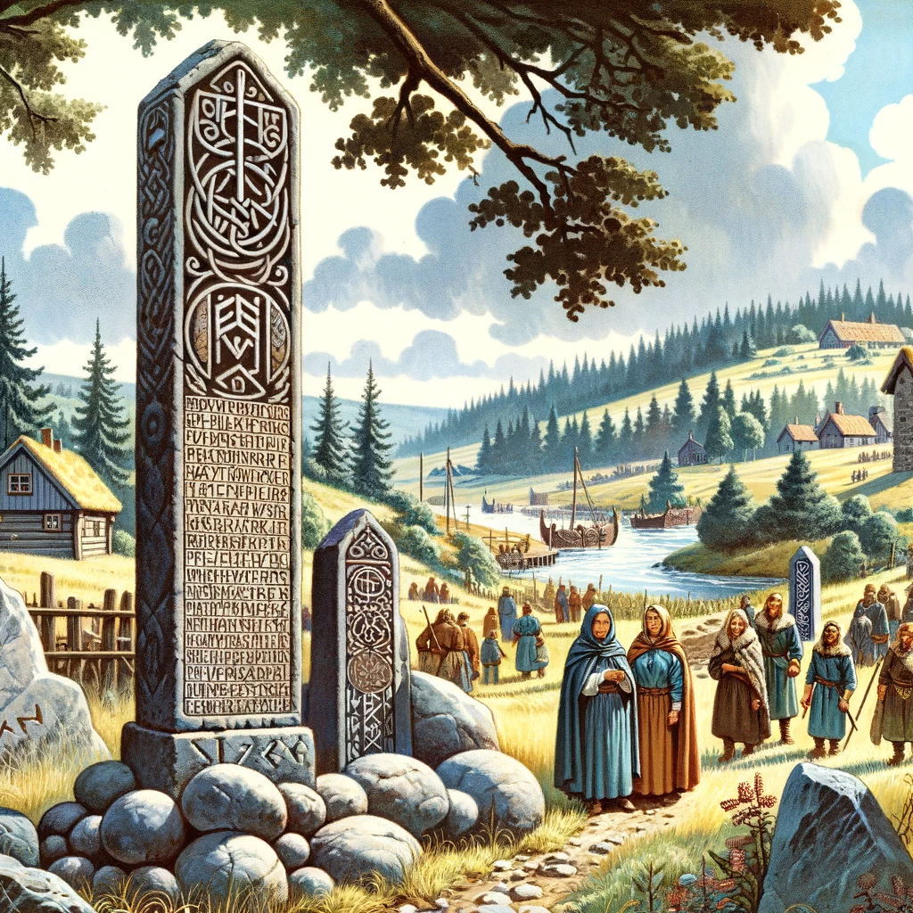

Швеция (Скандинавия)
|
В IX веке в Скандинавии, в основном в Швеции,
стала популярной традиция установкикаменных стел с мемориальными надписями в честь умерших членов семьи. Памятники не были связаны с захоронениями и устанавливались на наиболее посещаемых местах, таких как дороги, мосты, места собраний жителей и поля. В данных источниках также содержатся упоминания о Руси и её городах. Около сорока восточноевропейских топонимов содержатся в скальдических висах, которые рассказывают о путешествиях скандинавских ярлов или конунгов в земли, расположенные за Балтийским морем. В целом, скальдические стихи, упоминающие поездки на восток, предоставляют ценную информацию о характере русско-скандинавских связей в IX–XI веках. Однако большая часть скандинавских источников датируется XII веком и позже, а те источники, что были не затронуты в нашем исследовании зачастую посвящены другим событиям: заселение Исландии, разграбление Британии и другие. Поэтому древнескандинавские источники по достоверности и информативности практически равнозначны источникам Древней Руси, хотя и показывают тот факт, что норманны достаточно активно взаимодействовали со славянскими народами. Согласно скандинавским источникам, варяги (викинги из Скандинавии) заселили восточнославянские территории, основав там усадьбы и торговые поселения. Скандинавские источники также описывают варварские обычаи восточных славян, а также отмечают их участие в международной торговле и военных действиях. Важно отметить, что отношения между варягами и восточными славянами были сложными и включали не только военные конфликты, но и тесные торговые и культурные связи. В целом, скандинавские источники IX-XI веков представляют ценный исторический аспект при изучении политических и культурных связей между скандинавскими и русскими землями в этот период. |
 |
Византия
|
Начать изучение Византийских источников стоит
с биографии Георгия Амастридского. В этой биографии описывается "росов" в типичной для греко-римских источников манере, представляя их как диких иноземцев, аналогично описанию других не-римских народов в ранних римских источниках. Авторство анонимного воинского трактата организации лагеря и тактике сохранилось без указания автора в рукописных текстах. Текст содержит упоминания о росах как части византийской армии во время походного марша, а также рекомендации о ночном нападении на лагерь противника, в которых упоминаются русские всадники. Этот источник позволяет понять, что на территории Руси в IX-XI веке какого-то крепкого ядра не существовало: пока одни князья были союзниками византийского императора и поступали к нему на службу, другие воевали с ним и ходили походом на Константинополь и это всё происходило в примерно одно и тоже время. В итоге можно сказать что византийские источники IX-XI веков описывали Русь как варварское и малоизвестное государство на севере. Они отмечали викингов как основных игроков в политике Руси и описывали их варварские обычаи, но также отмечали их торговые связи с Византией. Также они упоминали Киевскую Русь как могущественное государство, с которым Византия вела военные действия, но также имела различные культурные связи. |

|
Франция
|
Исторические анналы Бертинского монастыря, завершенные в 882 году, являются продолжением общефранкского исторического сочинения "Франкские королевские анналы", которые прервались в 829 году. Название этого исторического памятника происходит от единственного сохранившегося полного списка X/XI веков, вероятно из второй половины X века. В них впервые упоминается аудиенция русских послов к императору франков Хлодвигу (Людовику) I. Письмо, возможно, написанное известным книжником Анастасием Библиотекарем, является ответом на письмо императора Василия I, которое не сохранилось. Письмо вызвано разногласиями между союзниками (византийцами и итальянскими франками), осаждающими город Бари в 871 году. В письме упреки адресуются Василию I Людовику II, включая тему несправедливого усвоения императорского титула франкскими государями. Также обсуждается титулатура правителей других народов, включая титул "хаган" для неких "норманнов". Этот памятник является важным источником по древнерусской истории из-за этого обстоятельства. |

|
Бавария
|
Документ, известный как "Раффельштеттенский таможенный устав", не является уставом города Раффельштеттена, как часто ошибочно считается, а собранием правил таможенных пошлин, действовавших на территории владений маркграфа Ар(и)бона. Эти правила охватывали Баварскую восточную марку и графский округ Траунгау. Название документ получил благодаря совещанию восточнобаварской знати, на котором обсуждался устав, происходившем в Раффельштеттене. Устав представляет особую ценность для историков России, поскольку в нем содержится самое древнее точно датированное свидетельство о международной деятельности древнерусских купцов. Интересно, что это свидетельство происходит с территории Баварского Подунавья, где также найдены более поздние данные о торговле с Русью. |
Саксония
|
Другим источником, в котором упоминается Русь, на удивление оказалась “Книга о саксонской войне”. Автор был членом канцелярии магдебургского архиепископа Вернера, а затем мерзебургского епископа Вернера. Это подтверждается большим количеством писем, используемых в его сочинении. Существует гипотеза, что это одно и то же лицо, что и засвидетельствованный в 1100 году магдебургский схоластик Бруно. Бруно был последователем противников германского короля Генриха IV в Саксонии. Его сочинение представляет собой не только историю саксонского восстания с 1073 года до избрания антикороля Херманна фон Зальма в 1081 году, но также талантливый иронический памфлет на Генриха IV. Одним из анекдотов, компрометирующих Генриха, является сюжет о посольстве на Русь; хотя его нельзя считать мифом. Устные рассказы, распространенные среди саксонского епископата, были для Бруно важным источником информации, в дополнение к переписке. |

|
Холодильник
| Яйцо правое | Яйцо левое |
|---|---|